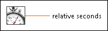

High Resolution Relative Seconds VI
Owning Palette: Timing VIs and Functions
Requires: Base Development System
Returns the relative current time in seconds. Use the difference between two successive values to measure the elapsed time between the calls. Use this VI to measure time spans with much higher resolution than you can obtain from the Tick Count (ms) function. The time resolution of this VI may vary with different operating systems and CPU types.
 | Note The operating system clock this VI uses is not tied to any absolute time reference and may drift over time when compared to absolute time sources. Avoid using this VI across long periods of time. |

 Add to the block diagram Add to the block diagram |
 Find on the palette Find on the palette |